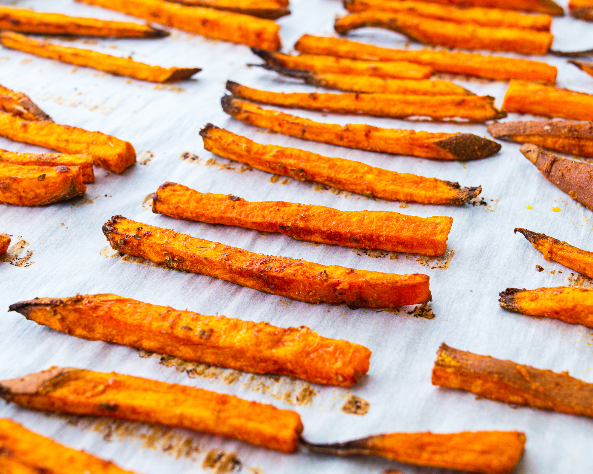

HOME
Potato Fries

Ingredients
- 2 Medium sweet potatoes
- 2 tablespoon cornstarch
- 2 tablespoon olive oil
- 1 teaspoon garlic powder
- 1 teaspoon paprika
- 1 teaspoon oregano
How to make it:
- Preheat your oven to 425°F
- Wash and pat dry the sweet potatoes.
Either peel the skin or keep the skin on and cut the sweet potato into 1/4-inch fries.
- Place the sweet potato fries in a bowl or container of cold water for at least 15 minutes to remove the
starch.
Drain the water and pat the sweet potatoes dry as best you can.
- In a small bowl, mix the cornstarch, salt, garlic powder, and paprika.
- Place the sweet potato fries in a large bowl and drizzle with olive oil.
Add the cornstarch mixture and toss the sweet potatoes until they are coated evenly.
- Place the sweet potato fries evenly on a baking sheet lined with parchment paper.
Do not overcrowd or overlap the fries. Use two baking sheets if necessary.
- Bake for 18-20 minutes, flipping halfway through, until the sweet potato fries are crispy and golden brown.
- Remove from the oven and allow the sweet potato fries to cool for a few minutes before serving.
Serve with your favorite dipping sauce. Enjoy!